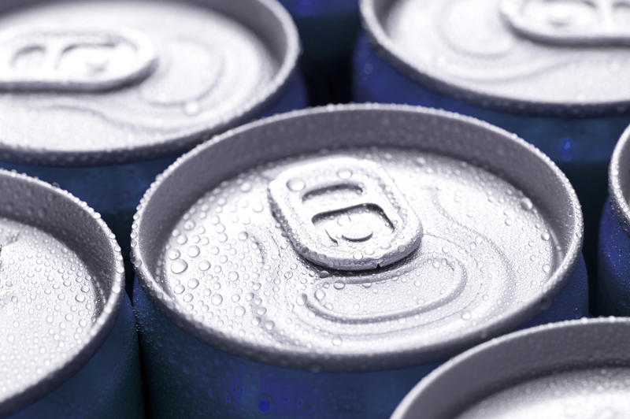

STORY BY: Michelle Siegel and Luciana Perez-Uribe
K atie Duncan has been a loyal consumer of Coca-Cola Cherry Zero Sugar for around two years, appreciating the lack of calories and glad that it has “a little bit of flavor to it.”
The niche beverage can be found in various sizes in both bottles and cans, but Duncan, a 35-year-old digital business mentor and data center specialist, prefers the aluminum-sealed flavor. At one point, Duncan would crack open a 12-ounce can whenever she sat down for dinner, and sometimes even at lunch.
However, earlier this year, many things changed — Duncan’s daily routine being just one of them. Coca-Cola Cherry Zero Sugar was among a variety of niche beverages, non-alcoholic and alcoholic alike, to disappear from store shelves. In the case of Coca-Cola Cherry Zero Sugar, Duncan and other fans found regular Coca-Cola and Diet Coke being stocked in its place.
"Cherry Coke Zero" by CC Chapman is licensed under CC BY-NC-ND 2.0
It is not that Coca-Cola Cherry Zero Sugar has been discontinued — rather, it is one of the many drinks produced by the Coca-Cola Company that enthusiasts around the nation have experienced difficulties finding in canned form. The coronavirus pandemic has created a can shortage.
“I have gone to multiple Targets, Wegmans, Giants…” Duncan told Capital News Service. “Since this whole pandemic, y’know, in March — we have been able to find… maybe four cases?”
Duncan, a resident of Pottstown, Pennsylvania, took her quest to Facebook on August 31.
“If anyone sees Cherry Coke Zero 12-pack of cans please let me know! It must be the new toilet paper of this pandemic,” she posted publicly.
Coca-Cola has replied to various comments Facebook users have made on the posts of its official page, many of them asking about the fates of their favorite niche beverages.
“Like many companies, we continue to see high demand for products consumed at home,” the company told one user, who asked about Coca-Cola Caffeine-Free, on July 15. “We are implementing contingency plans and mitigating the challenge as best we can to get the products people want to store shelves. We appreciate everyone’s patience as we work through these unprecedented times.”
Coca-Cola’s response to another user, who asked about Pibb Zero, was more specific about how these “contingency plans” led to the disappearance of niche drinks.
“We appreciate your loyalty,” the company wrote on August 24. “To meet extremely high demand, we’re temporarily focusing on the availability of certain products. We hope you’ll try one of our other products and check back later as we’re working hard during this unprecedented time to keep shelves stocked.”
Contrary to what one might assume, this dilemma is not inherently linked to a nationwide aluminum shortage, according to E Lee Bray, an aluminum commodity specialist with the United States Geological Survey.
In fact, when many can-recycling programs temporarily closed due to the COVID-19 pandemic earlier this year, the United States simply increased imports of used beverage can scrap metal.
Instead, the shortage relates to circulation and production capacity.
With COVID-19 keeping many Americans at home, Bray said, people seem to be abandoning the notion of soda as a treat to enjoy in bars and restaurants — now, they are stocking up on soda cans to sip at home.
This new phenomenon has Coca-Cola, as well as other major canned beverage producers, scrambling to keep products on the shelves.
PepsiCo — Coca-Cola’s primary rival — referred questions to Danielle Smotkin, spokesperson of the American Beverage Association, which represents the non-alcoholic beverage industry.
“Beverages in convenient, take-home packages like aluminum cans are particularly popular right now, and beverage company employees are doing all they can to make sure store shelves remain fully stocked,” Smotkin said in an email.
Coca-Cola spokeswoman Ann Moore expressed a similar sentiment, adding that her company is encouraging shoppers to enjoy their favorite niche sodas in glass and plastic bottles.
“We have added additional aluminum can capacity, but demand still may outpace supply at times,” Moore said in an email to CNS.
Can shortage might affect you're ability to crack open a cold one with the boys
The beer industry is having can problems, too.
Canned beer had been making strong gains on bottled beer even before the initial COVID-19 disruption, according to the National Beer Wholesalers Association, which represents beer distributors.
In 2019, cans accounted for 60% of sales, while glass bottles accounted for 30% and draft beer 10%. In 2020, canned beer sales rose to 67% and bottled beer share rose to 33%. Draft beer remained out of the marketplace for most of the late spring and early summer months of 2020.
The beer wholesalers said that draft beer is not expected to make a big comeback before the end of 2020, and packaged beer will continue to face supply constraints for the rest of the year.
In the District of Columbia, local breweries have been impacted by the aluminum can shortage, said Paul J. Dean, executive director of the District of Columbia Brewers Guild.
“The bottom line is yes, this is certainly a real thing, it’s definitely causing a big inconvenience to our local brewers,” Dean said.
image by freeimageslive.co.uk - freefoodphotos
As more people began to consume beer at home and taprooms reduced capacity or shut down, breweries had to shift to selling products to-go or through wholesalers and retailers. This increased the need for cans, which eventually led to a shortage, Dean explained.
Fortunately, the local brewing business is a “pretty tight-knit community,” Dean said. Whenever a brewery has extra cans, a rare occurrence, it sells it to other breweries in need, Dean said.
Members of the District’s brewers guild include Bluejacket DC, DC Brau, Red Bear Brewing Co., and Hellbender Brewing Company.
In the face of this major can shortage, some brewers have had to get creative.
In Colorado Springs, Colorado, Pete Kilman of Storybook Brewing bought thousands of unused cans from a Texas brewery that had closed down in April, then had each can shrink-wrapped with a new Storybook label.
“I don’t really know what to expect,” Kilman said. “I think that they’re going to have to figure out a way to manufacture more cans if we continue on this trend, because they’re not keeping up very well as it is.”
One of America’s major can manufacturers is the Ball Corporation. Ball is a major member of the Can Manufacturers Institute, a trade association.
Institute President Robert Budway said in an email that manufacturers like Ball, North America’s largest producer of recycled aluminum cans, are “fully focused on filling the extraordinary demand from all sectors of the industry’s customer base”.
Ball spokesman Scott McCarty said that the spike in demand the company has seen from its beverage-producing customers during the COVID-19 pandemic was “really unplanned” — and the end does not seem to be near just yet.
“I think demand is going to stay high the rest of the year,” McCarty said.
Meanwhile, neither Coca-Cola nor PepsiCo have said when fans of niche drinks like Katie Duncan can expect to see their favorite cans back on the shelves of grocery stores on a more regular basis.
“I’m very much hoping to see it soon,” Duncan said.